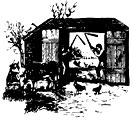
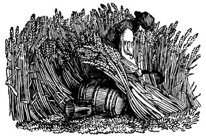
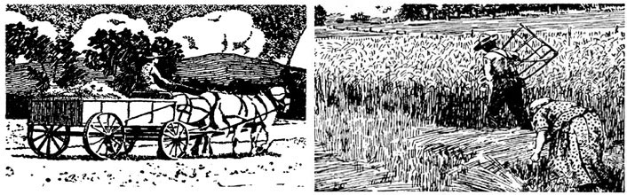
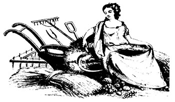

Copyright © 1973 by John and Sally Seymour, Introduction copyright © 1973 by Schocken Books, Inc.
Ah, the vicissitudes of time. Two years ago, when there were NO currently relevant small-scale-farming introductory handbooks available, many of us welcomed the publication of Richard Langer's Grow It! with open arms. Now that we're all older and more experienced, however, some folks find it increasingly easy to criticize that breakthrough beginner's guide (see the Feedback sections of MOTHER NOS. 23, 24 and 25).
Which brings us to another breakthrough book that is just as important (probably more so) now as Grow It! was two years ago . . . and which may well come up for its share of criticism in another 24 months or so.
Be that as it may, John and Sally Seymour's record of 18 successful years on a shirttail-sized homestead in England is important now and should offer welcome encouragement to today's back-to-the-landers . . . both real and imaginary. I started serializing the book in my No. 25 issue and I'm sure that many readers will want a personal copy for their home libraries.-MOTHER.
OTHER FIELD CROPS
Behold, I have given you every herb bearing seed, which is upon the face of all the earth, and every tree, in the
which is the fruit of a tree yielding seed; to you it shall be for meat.
GOD: Genesis 7:29
Oats is a most excellent corn for stock feeding, and grows very well in a damp or cold climate. Thus in Scotland it grows better than wheat and is there used as human food, which prompted Dr. Johnson to jibe at his Scottish friend Boswell that they fed men in Scotland on what in England they only fed to horses, to which Boswell replied: 'Yes. Better men-better horses.' It will grow on wetter and more acid land than either wheat or barley.
Oats is a fine grain crop to grow on the smallholding, because not only can it be very easily crushed to feed to stock or fed in the whole grain, but also it can be fed 'in the sheaf'. This is the way we feed it, and a very good way it is too. We cut it with a binder, harvest it in the usual way, and then throw each cow, bullock or horse one sheaf a day each all through the winter. The animals eat the straw and grain and the whole lot (and would eat the string too if you left it on) and they absolutely thrive on it. Thus we save ourselves the trouble of threshing and winnowing and milling and all the rest of it, for the cattle do it for us. Horses thrive on their oats given in this form too, although horses on heavy work would need a proportion of crushed oats as well.
Oats do very well after permanent pasture or a long ley, for they will grow well on rotting vegetable matter. As they are normally planted in the spring it means that you can go on grazing the ley right up to December. Then you should plough the land to give the frost a chance to break it down and help make a seed bed. You can broadcast the seed straight on to the ploughed land, in March or early April, at the rate of four bushels (1-1/2 cwt.) an acre, and harrow hard afterwards. If the land is heavy and cloddy go on harrowing half a dozen times until you have broken it up pretty fine. Harrow at first along the furrows-not across them. It's a good thing to roll oats after the shoots have come up above the ground, to press the roots in and give them a firmer hold. You don't have to though.
If you are going to feed it in the sheaf I suggest you harvest it early, when the straw is just beginning to yellow, because at this time the straw itself, which the cattle will eat, is highly nutritious. If it is the threshed grain you are after then you should cut it when the straw has gone completely yellow but before the grain is so ripe that it sheds easily when you pull it about. Oats need more drying than wheat or barley, and the old saying is that it should be 'churched' in the stook three times. That means that after it has been stooked it should see three Sundays in the stook before it is carted and put in the rick. But if you put it up in mows for a month or two you don't need to leave it in the stook (where it is more vulnerable to rain) for so long.
Oat straw, by the way, is by far the most nutritious of the straws in the British Isles, and good oat straw is better than indifferent hay. Wheat straw is very poor for feeding, although good for litter or for thatching. Barley straw is better for feeding than wheat straw and worse for thatching or litter.
Rye is little grown in the British Isles, but will grow and makes good bread (if you like rye bread). In North America it appears to make good whisky-if you like rye whisky. What rye is superb for is planting in the autumn with the intention of feeding it off to your cattle very early in the spring (during the 'hungry-gap') as a green fodder crop. If you feed it off hard, behind an electric fence or with tethered cattle, it Will give the cattle some green stuff just when they need it most, and if you spare it thereafter it will grow again for another 'bite', or even for a harvested grain crop in the autumn. The straw is good for thatching, and for making corn dollies.
The other corn crop occasionally grown in Britain but very extensively grown in America and Africa is maize. Maize, planted just after the last frosts of the year on good, deeply cultivated, well-manured land will give you an enormous crop of green fodder for your cows just when you don't want it because there's plenty of grass. Actually this is a simplification, because there is a slackening off in the nutritive value of the grass in late July and August when you might want to feed the maize. But if you make silage then maize is an excellent crop. As a crop to ripen and harvest the grain of it is a doubtful starter in Britain, but has been grown for this successfully. As a vegetable we will deal with it later, under ,sweet corn'.
And so we come to the almighty potato. Anybody can grow potatoes. But to grow a good crop of clean potatoes your land must be in very good heart. You can put up to twenty tons of muck (farmyard manure) on an acre and plant the tubers straight into the muck in the furrows, and you must cultivate them properly and keep the weeds down. If you have a ridging plough, either a horse-drawn single-furrow one or a tractor-drawn three-furrow one, draw out your furrows, chuck as much muck as you can get hold of in the bottom of the furrows (in the old horse days in England the furrows were of such a width that the wheels of the dung-cart would comfortably run in them and thus not break down the ridges, and the muck was scraped straight out of the back of the dung cart into the furrows with a croom, which is like a long, strong, four-tined rake), then sow your seed potatoes (really tubers-you sow the actual potato itself of course) on top of the muck, then split the ridges into the furrows with your ridging plough again. As weeds grow run your ridging plough through again sometimes. At least once, before the potatoes get too big, hand-hoe by pulling the ridges in which the potatoes are down into the furrows (without actually disturbing the growing potato plants). Then, a few days after, ridge them up again with the plough. When the potato plants get really big and meet each other then they will suppress the weeds to some extent themselves. But weeds grow like mad in the well-manured potato field, and if you don't look out you'll have a huge crop of weeds, a miserable one of potatoes, and a legacy of foul land for the next year.
If you haven't got a ridging plough you can simply plough your potatoes in with an ordinary plough, planting them in one furrow and then missing one furrow in the case of earlies and two furrows in the case of main crop and then planting another furrow.
On a garden scale you can either grow potatoes on the flat or in ridges, doing your work with the spade. Or we have a tool called a potato planter, common in Kent and Surrey, which is like a strange pair of tongs which you push into loose soil, drop a tuber into it, and open the tongs thus leaving the potato under the soil. The land has to be deeply dug or ploughed and well-worked for this.
Plant main crop potatoes in rows about 26 inches apart and about 20 inches in the rows. Earlies can be in rows 22 inches apart. As for your seed, you can use your own seed once at least (that is use your own small potatoes-'chats'-for-seed next year), and twice perhaps. After that, if you go on using your own seed, your yields will fall off. So you will have to buy seed. The reason for this is that seed, to be good, must be grown either north enough, or high enough, to be out of the reach of the aphids which cause certain virus diseases. If you had a patch of land over 800 feet in the south of England or Wales, you could indeed grow your own seed on it. But most people must buy their seed, at least every three years. In Britain it mostly comes from high land in Scotland; in India from Himachayal Pradesh. As for strain, everybody eventually develops their own preference. At first use what your neighbors use. Potatoes are a potash-hungry crop. Seaweed is the best manure for them-better than muck.
There is one disease that you will have to guard against, and that is blight -the disease that killed five million Irish people. In dry areas you may escape blight-in dry seasons. In wet areas you will never escape it. To guard against it you must spray, either with a modern anti-blight chemical or with old-fashioned 'Bordeaux mixture', which is made like this:
Dissolve 4 lbs. copper sulphate in 35 gallons of water in a wooden barrel (or plastic dustbins). Then take 2 lbs. freshly burned quicklime and slowly slake it with water and make it into 5 gallons of 'cream'. Pour the 'cream' through a sieve into the copper sulphate solution slowly. Make sure that all your copper has been precipitated by putting a polished knife blade in the liquid. If it comes out coated with a thin film of copper you must add more lime. Then spray on your potato tops immediately: the stuff will not keep more than a few hours. Spray the foliage well, under the leaves as well as on top. From 120 to 160 gallons are needed for an acre. The first spraying might be in the middle of June in the south of Britain, in mid-July in the Midlands, in the last week of July in the north. Another spray should be given two or three weeks later. If you do this you will probably not get blight.
What happens if you-like most of us-do not spray? You will get blight. In a spell of warm, damp weather, when 'blight warnings' are given out over the wireless, small black spots will begin to form on your potato foliage. Gradually the whole of the tops of your potatoes will go black, and rot away. Now if you do not touch those potatoes for a month, the blight spores may not go down and infect the potatoes. Leave the tubers underground, undisturbed, and they may not be infected with blight. Lift them when you need them to eat, or at any rate not before the deepest frosts of the winter are imminent, when the ground will become too hard for you to lift them at all. Your tubers will then not have blight. But you will have a much smaller yield of tubers than you would have had if you had been a good farmer and sprayed and not had blight at all. Some strains of spuds are more blight-resistant than others, but all will get it.
Here in Wales we are inclined to leave our potatoes in the ground until we want them, digging them as we need them, until at least after Christmas. In Suffolk, where there was intense frost, we used to get them out in fine weather in October or November, leave them on the ground for a day or two to dry out, and then clamp them. Clamping consists in making a long pyramidal heap of them, covering them with straw or dry bracken about six inches thick, and covering the straw or bracken with earth, which you then tamp down with the back of the spade. You should leave little 'chimneys' of straw or bracken sticking up through the earth along the ridge to allow for ventilation, and little 'doors' of it down at ground level for the same reason. The straw will keep the frost out and the potatoes will keep well until you want them: provided the actual tubers themselves have not been infected with blight spores. If you leave the spuds a month after the haulms (tops) are completely rotted from blight, your potatoes should not rot in storage. The sight of a nice long clamp of spuds near your house is a satisfying one, and it makes you feel that you will probably survive the winter.
Turnips and Swedes are brassica (like cabbages, mustard and kohlrabi), and biennials. The latter words means they live for two years making a big bulbous root the first year and producing flower and seed the second. We harvest them when they have made their swollen root the first year. Mangolds are like much larger turnips. They do not have the nutritive value of turnips but give much heavier crops. Agricultural chemists are apt to sneer at marigolds and say they are 'all water', but farmers reply 'maybe-but what water!' For marigolds, water or no, seem to produce a benefit in cattle that eat them out of all proportion to their chemical analysis. Sugar beet is smaller than mangold (marigolds may give up to forty tons an acre of crop in ideal conditions) and is used for sugar production. To make sugar yourself, chop the beet up as small as you can, boil the pulp, run the water off, and boil the water away, first, mixing lime with it and passing carbon dioxide through the solution. Unrefined sugar will be left as crystals. Fodder beet looks just like sugar beet but is grown for stock feeding. It is a most excellent fodder crop for cattle, pigs, sheep or even horses. It is high in protein.
The cultivation of all these root crops is similar, and so I will deal with them all together.
1. Dung the land well in the autumn.
2. Plough deeply.
3. Turnips: make a very fine seed bed and sow in May, but I would not recommend turnips or swedes for the self-supporter if he can possibly get in one of the other roots. For marigolds, sugar beet or fodder beet sow in rows about 20 inches apart (maybe 22 for marigolds) pretty thinly. Sow in the last fort-night in April in England, May in Scotland.
4. Horse hoe after a fortnight if you have a horse hoe. If you haven't 'side hoe' with the hand hoe. That is hoe only between the rows.
5. When the beet are dear little things with just four leaves, then single, or 'chop out and single'. This is done with the hand hoe and is very skilled work. Cut all the little plants out except one about every 8 or 9 inches with sugar and fodder beet, 12 inches with marigolds.
6. Horse hoe again if you can in, say, a fortnight. If not, hand hoe.
7. 'Second hoe' again by hand when weeds begin to show again.
8. Horse hoe again if you can. The more you hoe the better, for this is your 'cleaning crop', and your chance to get your land clean.
Harvest in September or October. Marigolds won't stand much frost at all, fodder beet little more. Harvest by pulling out of the ground, cutting the top off with a knife, throwing into a little pile, and covering with the tops against the frost. When you have done the whole field cart and clamp, just like potatoes. The beet will now keep the winter through and be a very valuable source of food for your cattle in the winter and 'hungry gap'. The hungry gap is at its worst in March and April. The grass hasn't begun to grow at that time, you have used up most of your hay, most of your roots, the animals are thin from the winter, it is a time when to be able to break into a big clamp of fodder beet or marigolds is very satisfying indeed. If you farm animals, farm all the year for the hungry gap and you won't go far wrong. I would recommend fodder beet more than anything.
Carrots grow well on light land. They want deeply cultivated land, and it should not have too much muck put on it the same year. Sow in rows about a foot apart (4 lbs. seed per acre), 'single when the plants come up to four to five inches between plants. Harvest and clamp like other roots. They are very high in feeding value, and will almost fatten pigs.
I am dealing now only with fodder crops: that is crops to feed to animals. Beans and peas are the only really high source of protein that you can grow yourself, but unfortunately very little development has taken place in the British Isles about them. The old field bean, horse bean or tick bean, is still grown as a field crop on some farms on strong heavy land, but it has many disadvantages. It is a martyr to chocolate-spot, a fungoid disease, it can be ruined by aphids (particularly spring-sown varieties can), can be mown down by frost, and is very easily choked by weeds. Sow winter beans by the second week of October at 2-1/2 bushels per acre (a bushel weighs 65 lbs.). If you can't drill them plough them in-drop them behind a plough. Spring beans sow in February at 3-1/2 bushels an acre, but I don't recommend them. Beans must have lime if on acid soil and like potash and phosphates but do not need nitrogen because they make their own. If you harrow the field in dry weather in March it does good-lets the air in and tears out weeds. If you can horse hoe or hand hoe or hand weed so much the better. The land will get foul whatever you do. Winter beans should be ready to harvest in August, spring beans (if the aphids have not eaten them) well into September. Cut with a binder, or by hand, stook like wheat, and you can leave the stooks in the field until all your other corn is in because beans don't mind the rain. Thresh how you like, but normally they are not threshed until spring because fresh beans are not good for stock. They mature in the rick.
But the whole question of fodder beans has been neglected in Britain because we are getting so much cheap protein from other sources-principally the sea. At the present rate of exploitation though the main fishing grounds will be sterile in ten or twenty years and the supply of fish meal will begin to dry up. Then we will be searching around frantically for a source of protein that we can grow ourselves, and beans will probably have to be the answer. The soya bean is one of the major sources of protein in the world today, but unfortunately it will not grow in cold climates, We grew the kind of bean that Heinz use for their 'baked beans', in Suffolk, and it grew marvelously and we got good crops. We did not grow enough to feed much to stock but ate it ourselves. We tried it in Wales but had no success, but there is a small insect in ploughed-up grassland here which nips beans off at ground level for the first few years of ploughing. I suggest that every husbandman tries out every kind of bean he can lay his hands on to find the one which will crop best. Haricots; and other beans of that nature must not be planted before the last frost, otherwise it will nip them off.
Lucerne, or alfalfa, is a marvellous plant. It is like a clover except that it stands more upright, and pushes its roots down to incredible depths in the soil. It can be cut three or four times in a summer, and even in England up to 15 tons of fodder can be got from it, of the highest quality. It makes fine hay, fine silage, and is marvellous fed green. If it is ensiled it must be mixed with say grass or green rye or oats, as it is too rich by itself. In South Africa, where irrigation allows it to be grown on the deep rich soils of the Karroo, I have seen eight cuts a year taken off it. It is only really of use in England in the dryer areas, such as Suffolk (where we included it in our 'seeds' mixture for establishing permanent pasture). If sown by itself the land must be super clean (i.e., weed free) or the weeds will get the better of it in a year or two. Your seed merchant may recommend inoculating your soil with B. radicicola, the bacterium which grows at its roots and enables it to fix nitrogen. It enriches the soil enormously, and much of the near-desert land of Breckland was reclaimed and made fertile by lucerne. Sow it in August, after you have spent most of the summer cleaning the land.
Kale and cabbage are great stock foods. They can be manured heavily with muck, and respond to large dressings of nitrogen if you want to give it to them. Cabbages and marrow stem kale should be used up first. Marrow stem kale is often grazed off -the land behind an electric fence. If you cut the cabbages by hand leave the stalks and they will sprout again to provide a bite for sheep or cows later on. You can clamp really hard drum-head cabbage. Hungry-gap kale should be planted as well, for this will withstand the winter frosts and give you a bite of green stuff in the dreaded 'hungry gap' when you most need it. If it is milk you are feeding for, in any sort of animal, nothing is as good as fresh green fodder. Kale can be drilled and hoed, or broadcast on clean land and not hoed. It makes most weight drilled and hoed but it is more work.
Rape, which is a turnip that does not make a turnip if you see what I mean, is useful because you can sow it so late-right up to the end of summer. It is a 'catch crop'-can be grown after another crop has been taken off. It's good to feed off the land in the winter. Mustard does the same job. If I grow kale for folding off behind an electric fence I like to grow three rows of rape to every three rows of kale, so that the electric fence can go over the rape and not be shorted by the taller kale.
|
 |
 |
 |
|
 |
|
|